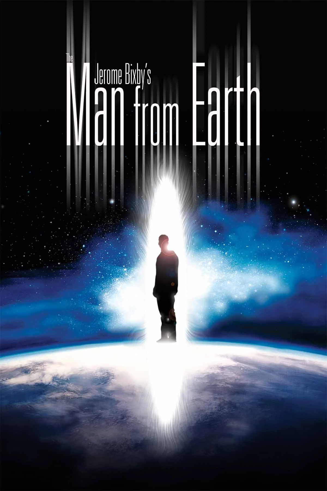
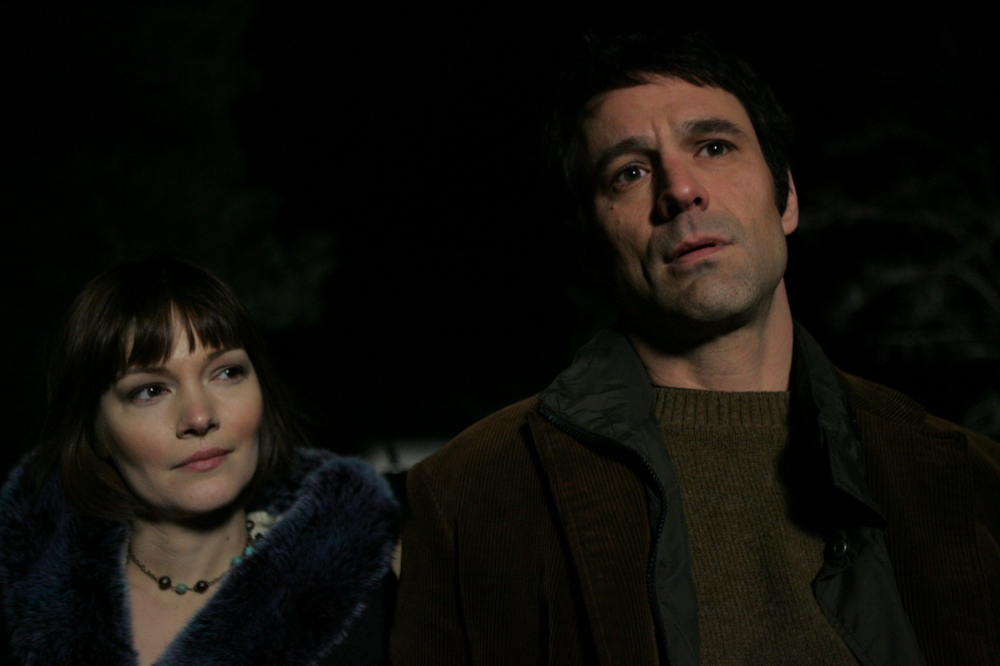
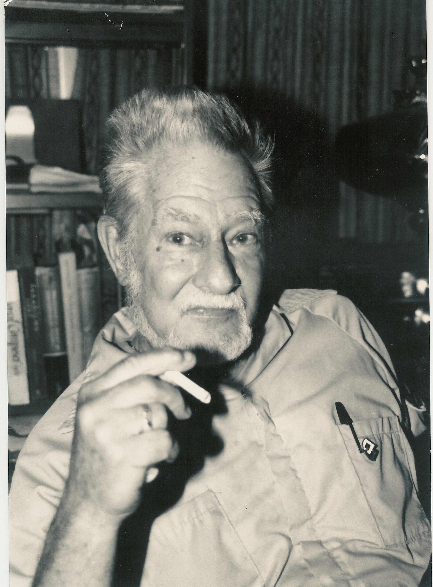

Warum The Man from Earth mein Lieblingsfilm ist
Kein Film wäre als erster Eintrag in diesem Filmblog besser geeignet als mein absoluter Lieblingsfilm. Lange Zeit konnte ich die Frage "Was ist dein Lieblingsfilm?" nicht eindeutig beantworten. Dann entdeckte ich The Man from Earth und er wuchs mir sofort ans Herz. Fünf Jahre und etwa ein Dutzend Sichtungen später kann ich es mit Sicherheit sagen: Dies ist der Film, an dem sich für mich alle anderen messen lassen müssen.
Warum gerade dieser Film?
Ich bin voreingenommen, und das will ich gar nicht verstecken. Ich liebe Kammerspiele. Ich liebe harte Science-Fiction, die zum Mitdenken anregt. Und ich liebe Filme, die mit minimalem Budget Großes schaffen. All das vereint The Man from Earth in 87 Minuten und trifft damit exakt meinen Nerv.
Die Prämisse ist so einfach wie genial: Ein Universitätsprofessor kündigt überraschend und eröffnet seinen Kollegen beim Abschiedsabend, dass er 14.000 Jahre alt ist. Was folgt, ist ein einziges langes Gespräch. Keine Rückblenden, keine Spezialeffekte, keine Actionsequenzen. Nur Menschen in einem Raum, die eine unmögliche Behauptung zu widerlegen versuchen und daran scheitern.

Wo der Film schwächelt und warum es nicht zählt
Ich kann nicht leugnen, dass The Man from Earth offensichtliche Schwächen hat. Die Bildqualität ist grauenhaft, die Kameraarbeit nicht viel besser, und die schauspielerische Leistung ist auch nicht die stärkste, die man je gesehen hat. Das lässt sich auch erklären: Regisseur Richard Schenkman drehte den Film in nur acht Tagen auf MiniDV, mit einem winzigen Budget und einer einzigen Woche Probenzeit. Dass unter diesen Umständen kein visuelles Meisterwerk entstanden ist, überrascht wenig.
Aber hier ist die Sache: Es spielt keine Rolle. Man könnte The Man from Earth problemlos als Hörspiel hören und würde kaum etwas vermissen, ähnlich wie bei The Guilty. Die eigentliche Qualität dieses Films liegt nicht auf dem Bildschirm. Sie entfaltet sich im Kopf.

Warum der Film trotzdem funktioniert
Die Antwort ist eine einzige: das Drehbuch. Jerome Bixby trug die Idee zu dieser Geschichte seit den 1940er oder 50er Jahren mit sich. Er vollendete das Skript buchstäblich auf dem Sterbebett und diktierte die letzten Zeilen seinem Sohn Emerson. Was dabei herauskam, ist ein Drehbuch von solcher Dichte und Präzision, dass Schenkman es später sogar als Theaterstück adaptierte. Es funktioniert als reiner Text, und genau das macht es so besonders.
Mit 87 Minuten Laufzeit wirkt der Film zu keiner Sekunde gestreckt. Ganz im Gegenteil: Jedes Mal bin ich aufs Neue überrascht, wie schnell er vorbei ist. Kaum habe ich ihn angemacht, ist schon die Hälfte vorbei. Ich verliere mich so sehr in den Film, dass ich die Zeit komplett vergesse. Kein anderer Film schafft das bei mir so verlässlich.
Fazit
The Man from Earth beweist, dass man weder Budget noch Spezialeffekte braucht, um den Zuschauer in Atem zu halten. Alles, was es braucht, ist eine einzige Frage und den Mut, sie ernst zu nehmen. Wer Kammerspiele mag, wer Science-Fiction liebt, die im Kopf stattfindet, und wer bereit ist, sich auf 87 Minuten reinen Dialog einzulassen, dem lege ich diesen Film wärmstens ans Herz.
Ich liebe diesen Film. Danke Jerome Bixby, danke Richard Schenkman.
Ähnliche Filme
Wem The Man from Earth gefallen hat, dem empfehle ich: Primer (2004), Coherence (2013) und Something in the Dirt (2022).
Weitere Reviews